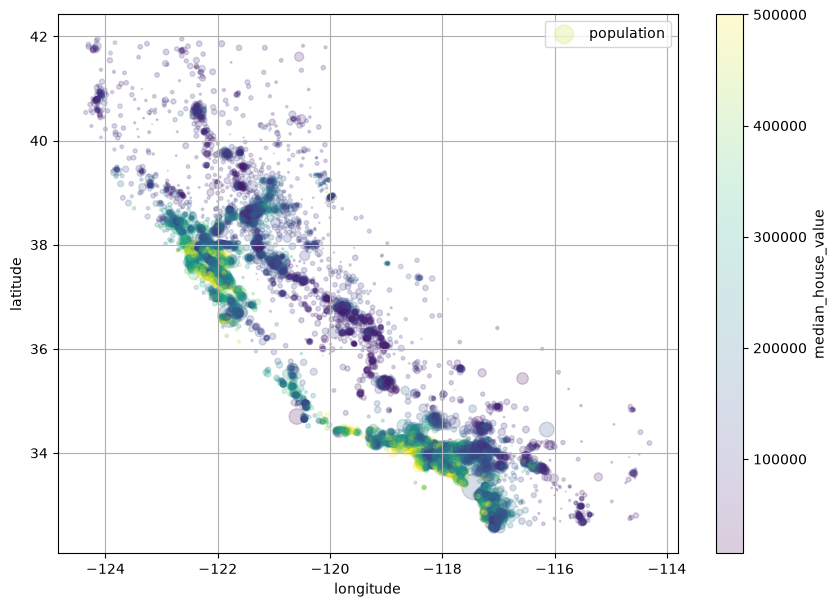
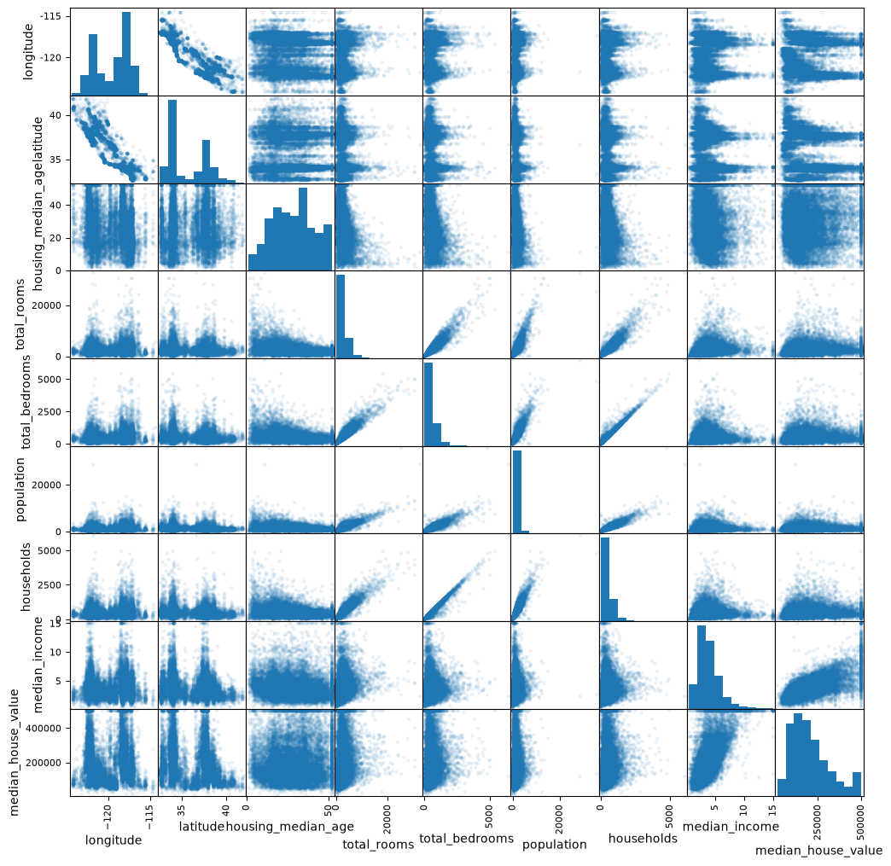
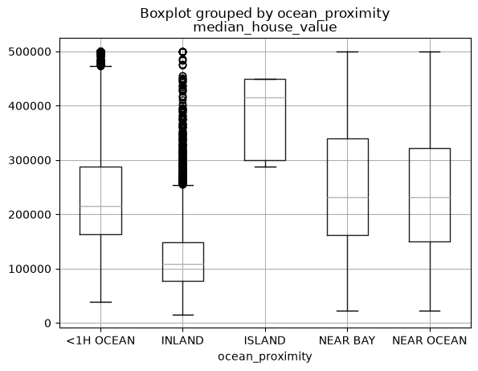
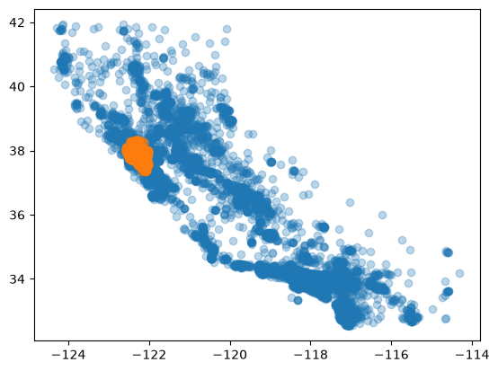
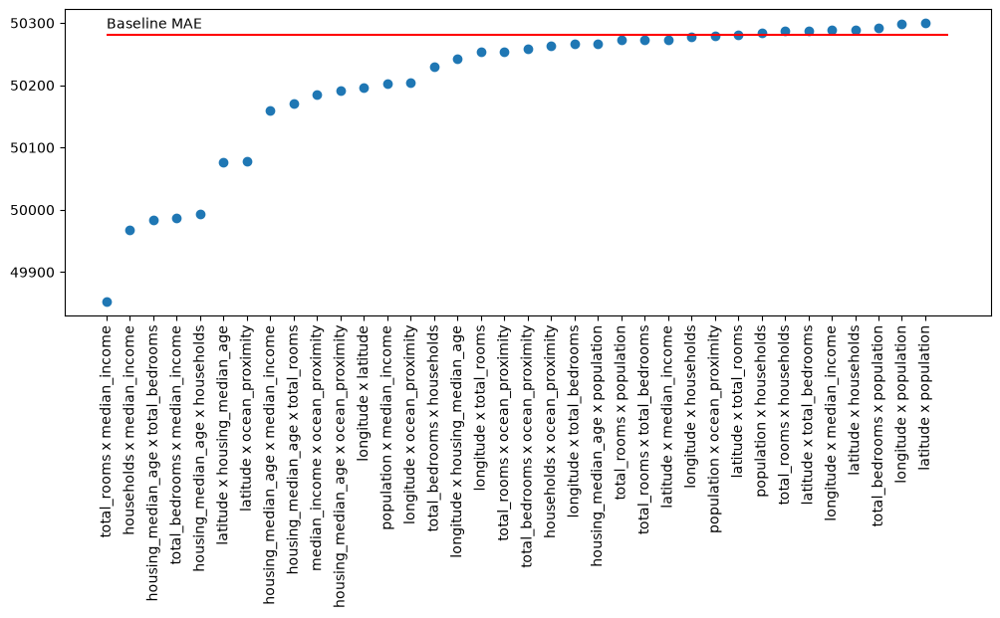
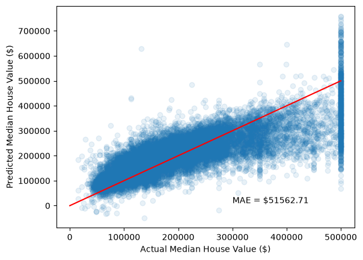

import math
import pandas as pd
import numpy as np
import matplotlib.pyplot as plt
from sklearn.metrics import mean_absolute_error
from sklearn.model_selection import train_test_split, cross_val_score
from sklearn.linear_model import LinearRegression
from sklearn.tree import DecisionTreeRegressor
from sklearn.impute import KNNImputer
from sklearn.compose import make_column_transformer
from sklearn.pipeline import make_pipeline
from sklearn.preprocessing import OrdinalEncoder, StandardScaler, PolynomialFeatures, FunctionTransformer
from sklearn.feature_selection import SelectFromModel
from pandas.plotting import scatter_matrixAdapted from the book “Hands-On Machine Learning with Scikit-Learn and TensorFlow” by Aurélien Géron
Adapted from original notebook by Aurélien Géron This notebook requires Python 3.7 or later and scikit-learn 1.0.1 or later.
housing = pd.read_csv("housing.csv")# look at the first few rows of the housing dataframe
housing.head()| longitude | latitude | housing_median_age | total_rooms | total_bedrooms | population | households | median_income | median_house_value | ocean_proximity | |
|---|---|---|---|---|---|---|---|---|---|---|
| 0 | -122.23 | 37.88 | 41.0 | 880.0 | 129.0 | 322.0 | 126.0 | 8.3252 | 452600.0 | NEAR BAY |
| 1 | -122.22 | 37.86 | 21.0 | 7099.0 | 1106.0 | 2401.0 | 1138.0 | 8.3014 | 358500.0 | NEAR BAY |
| 2 | -122.24 | 37.85 | 52.0 | 1467.0 | 190.0 | 496.0 | 177.0 | 7.2574 | 352100.0 | NEAR BAY |
| 3 | -122.25 | 37.85 | 52.0 | 1274.0 | 235.0 | 558.0 | 219.0 | 5.6431 | 341300.0 | NEAR BAY |
| 4 | -122.25 | 37.85 | 52.0 | 1627.0 | 280.0 | 565.0 | 259.0 | 3.8462 | 342200.0 | NEAR BAY |
# summarize the data
housing.info()<class 'pandas.DataFrame'>
RangeIndex: 20640 entries, 0 to 20639
Data columns (total 10 columns):
# Column Non-Null Count Dtype
--- ------ -------------- -----
0 longitude 20640 non-null float64
1 latitude 20640 non-null float64
2 housing_median_age 20640 non-null float64
3 total_rooms 20640 non-null float64
4 total_bedrooms 20433 non-null float64
5 population 20640 non-null float64
6 households 20640 non-null float64
7 median_income 20640 non-null float64
8 median_house_value 20640 non-null float64
9 ocean_proximity 20640 non-null str
dtypes: float64(9), str(1)
memory usage: 1.6 MBhousing.describe()| longitude | latitude | housing_median_age | total_rooms | total_bedrooms | population | households | median_income | median_house_value | |
|---|---|---|---|---|---|---|---|---|---|
| count | 20640.000000 | 20640.000000 | 20640.000000 | 20640.000000 | 20433.000000 | 20640.000000 | 20640.000000 | 20640.000000 | 20640.000000 |
| mean | -119.569704 | 35.631861 | 28.639486 | 2635.763081 | 537.870553 | 1425.476744 | 499.539680 | 3.870671 | 206855.816909 |
| std | 2.003532 | 2.135952 | 12.585558 | 2181.615252 | 421.385070 | 1132.462122 | 382.329753 | 1.899822 | 115395.615874 |
| min | -124.350000 | 32.540000 | 1.000000 | 2.000000 | 1.000000 | 3.000000 | 1.000000 | 0.499900 | 14999.000000 |
| 25% | -121.800000 | 33.930000 | 18.000000 | 1447.750000 | 296.000000 | 787.000000 | 280.000000 | 2.563400 | 119600.000000 |
| 50% | -118.490000 | 34.260000 | 29.000000 | 2127.000000 | 435.000000 | 1166.000000 | 409.000000 | 3.534800 | 179700.000000 |
| 75% | -118.010000 | 37.710000 | 37.000000 | 3148.000000 | 647.000000 | 1725.000000 | 605.000000 | 4.743250 | 264725.000000 |
| max | -114.310000 | 41.950000 | 52.000000 | 39320.000000 | 6445.000000 | 35682.000000 | 6082.000000 | 15.000100 | 500001.000000 |
# just one categorical feature
housing["ocean_proximity"].value_counts()ocean_proximity
<1H OCEAN 9136
INLAND 6551
NEAR OCEAN 2658
NEAR BAY 2290
ISLAND 5
Name: count, dtype: int64# Before doing much more, split!
train, test = train_test_split(housing, test_size=0.2, random_state=42)# how about a heat map?
housing.plot(
kind="scatter",
x="longitude",
y="latitude",
grid=True,
s=housing["population"] / 100,
label="population",
c="median_house_value",
cmap="viridis",
colorbar=True,
legend=True,
figsize=(10, 7),
alpha=0.2,
)
plt.show()
# What kinds of scales are we looking at?
scatter_matrix(train, figsize=(12, 12), alpha=0.1)
plt.show()
train.plot.scatter(x="median_income", y="median_house_value", alpha=0.3)
train.boxplot(column="median_house_value", by="ocean_proximity")Missing features
# First, let's look at the missing values in the total_bedrooms column
null_rows_idx = train.isnull().any(axis=1)
print(f"Missing {len(train[null_rows_idx])} of {len(train)} rows")
train.loc[null_rows_idx].head()Missing 163 of 16512 rows| longitude | latitude | housing_median_age | total_rooms | total_bedrooms | population | households | median_income | median_house_value | ocean_proximity | |
|---|---|---|---|---|---|---|---|---|---|---|
| 9529 | -118.31 | 33.94 | 40.0 | 1550.0 | NaN | 798.0 | 270.0 | 3.7750 | 153800.0 | <1H OCEAN |
| 16519 | -117.86 | 34.01 | 16.0 | 4632.0 | NaN | 3038.0 | 727.0 | 5.1762 | 264400.0 | <1H OCEAN |
| 19782 | -119.75 | 34.45 | 6.0 | 2864.0 | NaN | 1404.0 | 603.0 | 5.5073 | 263800.0 | NEAR OCEAN |
| 1343 | -120.32 | 37.29 | 38.0 | 576.0 | NaN | 478.0 | 112.0 | 2.3382 | 59600.0 | INLAND |
| 9827 | -121.85 | 36.61 | 38.0 | 238.0 | NaN | 191.0 | 67.0 | 1.3897 | 125000.0 | <1H OCEAN |
Categorical Encoding
# Option 1: Ordinal encoding
# naive implementation
# If ordinal, needs to make sense - default values are alphabetical
ordinal_encoder = OrdinalEncoder(
categories=[["ISLAND", "NEAR BAY", "NEAR OCEAN", "<1H OCEAN", "INLAND"]]
)# Let's confirm what "near bay" means - San Francisco Bay area?
near_bay = train["ocean_proximity"] == "NEAR BAY"
plt.scatter(train["longitude"], train["latitude"], alpha=0.3)
plt.scatter(train["longitude"][near_bay], train["latitude"][near_bay], alpha=0.3)
Processing Pipelines
num_attribs = [
"longitude",
"latitude",
"housing_median_age",
"total_rooms",
"total_bedrooms",
"population",
"households",
"median_income",
]
# The numeric features get the usual treatment
num_pipeline = make_pipeline(
KNNImputer(),
)
# altogether now
preprocessing = make_column_transformer(
(num_pipeline, num_attribs),
(ordinal_encoder, ["ocean_proximity"]),
)
preprocessingColumnTransformer(transformers=[('pipeline',
Pipeline(steps=[('knnimputer', KNNImputer())]),
['longitude', 'latitude', 'housing_median_age',
'total_rooms', 'total_bedrooms', 'population',
'households', 'median_income']),
('ordinalencoder',
OrdinalEncoder(categories=[['ISLAND',
'NEAR BAY',
'NEAR OCEAN',
'<1H OCEAN',
'INLAND']]),
['ocean_proximity'])])In a Jupyter environment, please rerun this cell to show the HTML representation or trust the notebook. On GitHub, the HTML representation is unable to render, please try loading this page with nbviewer.org.
Parameters
['longitude', 'latitude', 'housing_median_age', 'total_rooms', 'total_bedrooms', 'population', 'households', 'median_income']
Parameters
['ocean_proximity']
Parameters
# Finally we can train some kind of model
pipeline = make_pipeline(
preprocessing,
LinearRegression(),
)
# cross-validate
ref_mae = cross_val_score(pipeline, train, train["median_house_value"], scoring="neg_mean_absolute_error")
print(-ref_mae.mean())50281.22597779729A systemic approach for interactions
Baseline: no interactions considered. Then, add on each pairwise interaction and plot results.
# 8 numerical attributes plus our single ordinal encoded category
feat_names = num_attribs + ["ocean_proximity"]
k = len(feat_names)
# k choose 2 possible interactions
n_pairs = math.comb(k, 2)
i_effect = np.zeros((n_pairs,))
names = [""] * n_pairs
def interact(X):
return np.hstack([X, (X[:,0] * X[:,1])[:, np.newaxis]])
count = 0
for i in range(k):
for j in range(i+1, k):
pipeline = make_pipeline(
preprocessing,
# Note: might be better to normalize after product
make_column_transformer(
(FunctionTransformer(interact), [i, j]),
remainder="passthrough",
),
StandardScaler(),
LinearRegression()
)
i_effect[count] = cross_val_score(pipeline, train, train["median_house_value"], scoring="neg_mean_absolute_error").mean()
names[count] = f"{feat_names[i]} x {feat_names[j]}"
count = count + 1# look at the ones that improve the MAE
order = np.argsort(i_effect, descending=True)
plt.figure(figsize=(12, 4))
plt.scatter(range(n_pairs), -i_effect[order])
plt.hlines(-ref_mae.mean(), 0, n_pairs, colors="red")
plt.text(0, -ref_mae.mean() + 10, "Baseline MAE")
plt.xticks(range(n_pairs), np.asarray(names)[order], rotation=90)
plt.show()
The easier way
Generate all pairwise interactions, then use feature selection to keep the ones that improve things. More efficient if your dataset isn’t too big.
pipeline = make_pipeline(
preprocessing,
PolynomialFeatures(degree=3),
StandardScaler(),
LinearRegression(),
).set_output(transform="pandas")
# cross-validate
all_interactions_mae = cross_val_score(pipeline, train, train["median_house_value"], scoring="neg_mean_absolute_error")
-all_interactions_mae.mean()np.float64(41105.323921591305)pipeline.fit(train, train["median_house_value"])
train_transform = pipeline[:-1].transform(train)for c in train_transform.columns:
print(c)1
pipeline__longitude
pipeline__latitude
pipeline__housing_median_age
pipeline__total_rooms
pipeline__total_bedrooms
pipeline__population
pipeline__households
pipeline__median_income
ordinalencoder__ocean_proximity
pipeline__longitude^2
pipeline__longitude pipeline__latitude
pipeline__longitude pipeline__housing_median_age
pipeline__longitude pipeline__total_rooms
pipeline__longitude pipeline__total_bedrooms
pipeline__longitude pipeline__population
pipeline__longitude pipeline__households
pipeline__longitude pipeline__median_income
pipeline__longitude ordinalencoder__ocean_proximity
pipeline__latitude^2
pipeline__latitude pipeline__housing_median_age
pipeline__latitude pipeline__total_rooms
pipeline__latitude pipeline__total_bedrooms
pipeline__latitude pipeline__population
pipeline__latitude pipeline__households
pipeline__latitude pipeline__median_income
pipeline__latitude ordinalencoder__ocean_proximity
pipeline__housing_median_age^2
pipeline__housing_median_age pipeline__total_rooms
pipeline__housing_median_age pipeline__total_bedrooms
pipeline__housing_median_age pipeline__population
pipeline__housing_median_age pipeline__households
pipeline__housing_median_age pipeline__median_income
pipeline__housing_median_age ordinalencoder__ocean_proximity
pipeline__total_rooms^2
pipeline__total_rooms pipeline__total_bedrooms
pipeline__total_rooms pipeline__population
pipeline__total_rooms pipeline__households
pipeline__total_rooms pipeline__median_income
pipeline__total_rooms ordinalencoder__ocean_proximity
pipeline__total_bedrooms^2
pipeline__total_bedrooms pipeline__population
pipeline__total_bedrooms pipeline__households
pipeline__total_bedrooms pipeline__median_income
pipeline__total_bedrooms ordinalencoder__ocean_proximity
pipeline__population^2
pipeline__population pipeline__households
pipeline__population pipeline__median_income
pipeline__population ordinalencoder__ocean_proximity
pipeline__households^2
pipeline__households pipeline__median_income
pipeline__households ordinalencoder__ocean_proximity
pipeline__median_income^2
pipeline__median_income ordinalencoder__ocean_proximity
ordinalencoder__ocean_proximity^2
pipeline__longitude^3
pipeline__longitude^2 pipeline__latitude
pipeline__longitude^2 pipeline__housing_median_age
pipeline__longitude^2 pipeline__total_rooms
pipeline__longitude^2 pipeline__total_bedrooms
pipeline__longitude^2 pipeline__population
pipeline__longitude^2 pipeline__households
pipeline__longitude^2 pipeline__median_income
pipeline__longitude^2 ordinalencoder__ocean_proximity
pipeline__longitude pipeline__latitude^2
pipeline__longitude pipeline__latitude pipeline__housing_median_age
pipeline__longitude pipeline__latitude pipeline__total_rooms
pipeline__longitude pipeline__latitude pipeline__total_bedrooms
pipeline__longitude pipeline__latitude pipeline__population
pipeline__longitude pipeline__latitude pipeline__households
pipeline__longitude pipeline__latitude pipeline__median_income
pipeline__longitude pipeline__latitude ordinalencoder__ocean_proximity
pipeline__longitude pipeline__housing_median_age^2
pipeline__longitude pipeline__housing_median_age pipeline__total_rooms
pipeline__longitude pipeline__housing_median_age pipeline__total_bedrooms
pipeline__longitude pipeline__housing_median_age pipeline__population
pipeline__longitude pipeline__housing_median_age pipeline__households
pipeline__longitude pipeline__housing_median_age pipeline__median_income
pipeline__longitude pipeline__housing_median_age ordinalencoder__ocean_proximity
pipeline__longitude pipeline__total_rooms^2
pipeline__longitude pipeline__total_rooms pipeline__total_bedrooms
pipeline__longitude pipeline__total_rooms pipeline__population
pipeline__longitude pipeline__total_rooms pipeline__households
pipeline__longitude pipeline__total_rooms pipeline__median_income
pipeline__longitude pipeline__total_rooms ordinalencoder__ocean_proximity
pipeline__longitude pipeline__total_bedrooms^2
pipeline__longitude pipeline__total_bedrooms pipeline__population
pipeline__longitude pipeline__total_bedrooms pipeline__households
pipeline__longitude pipeline__total_bedrooms pipeline__median_income
pipeline__longitude pipeline__total_bedrooms ordinalencoder__ocean_proximity
pipeline__longitude pipeline__population^2
pipeline__longitude pipeline__population pipeline__households
pipeline__longitude pipeline__population pipeline__median_income
pipeline__longitude pipeline__population ordinalencoder__ocean_proximity
pipeline__longitude pipeline__households^2
pipeline__longitude pipeline__households pipeline__median_income
pipeline__longitude pipeline__households ordinalencoder__ocean_proximity
pipeline__longitude pipeline__median_income^2
pipeline__longitude pipeline__median_income ordinalencoder__ocean_proximity
pipeline__longitude ordinalencoder__ocean_proximity^2
pipeline__latitude^3
pipeline__latitude^2 pipeline__housing_median_age
pipeline__latitude^2 pipeline__total_rooms
pipeline__latitude^2 pipeline__total_bedrooms
pipeline__latitude^2 pipeline__population
pipeline__latitude^2 pipeline__households
pipeline__latitude^2 pipeline__median_income
pipeline__latitude^2 ordinalencoder__ocean_proximity
pipeline__latitude pipeline__housing_median_age^2
pipeline__latitude pipeline__housing_median_age pipeline__total_rooms
pipeline__latitude pipeline__housing_median_age pipeline__total_bedrooms
pipeline__latitude pipeline__housing_median_age pipeline__population
pipeline__latitude pipeline__housing_median_age pipeline__households
pipeline__latitude pipeline__housing_median_age pipeline__median_income
pipeline__latitude pipeline__housing_median_age ordinalencoder__ocean_proximity
pipeline__latitude pipeline__total_rooms^2
pipeline__latitude pipeline__total_rooms pipeline__total_bedrooms
pipeline__latitude pipeline__total_rooms pipeline__population
pipeline__latitude pipeline__total_rooms pipeline__households
pipeline__latitude pipeline__total_rooms pipeline__median_income
pipeline__latitude pipeline__total_rooms ordinalencoder__ocean_proximity
pipeline__latitude pipeline__total_bedrooms^2
pipeline__latitude pipeline__total_bedrooms pipeline__population
pipeline__latitude pipeline__total_bedrooms pipeline__households
pipeline__latitude pipeline__total_bedrooms pipeline__median_income
pipeline__latitude pipeline__total_bedrooms ordinalencoder__ocean_proximity
pipeline__latitude pipeline__population^2
pipeline__latitude pipeline__population pipeline__households
pipeline__latitude pipeline__population pipeline__median_income
pipeline__latitude pipeline__population ordinalencoder__ocean_proximity
pipeline__latitude pipeline__households^2
pipeline__latitude pipeline__households pipeline__median_income
pipeline__latitude pipeline__households ordinalencoder__ocean_proximity
pipeline__latitude pipeline__median_income^2
pipeline__latitude pipeline__median_income ordinalencoder__ocean_proximity
pipeline__latitude ordinalencoder__ocean_proximity^2
pipeline__housing_median_age^3
pipeline__housing_median_age^2 pipeline__total_rooms
pipeline__housing_median_age^2 pipeline__total_bedrooms
pipeline__housing_median_age^2 pipeline__population
pipeline__housing_median_age^2 pipeline__households
pipeline__housing_median_age^2 pipeline__median_income
pipeline__housing_median_age^2 ordinalencoder__ocean_proximity
pipeline__housing_median_age pipeline__total_rooms^2
pipeline__housing_median_age pipeline__total_rooms pipeline__total_bedrooms
pipeline__housing_median_age pipeline__total_rooms pipeline__population
pipeline__housing_median_age pipeline__total_rooms pipeline__households
pipeline__housing_median_age pipeline__total_rooms pipeline__median_income
pipeline__housing_median_age pipeline__total_rooms ordinalencoder__ocean_proximity
pipeline__housing_median_age pipeline__total_bedrooms^2
pipeline__housing_median_age pipeline__total_bedrooms pipeline__population
pipeline__housing_median_age pipeline__total_bedrooms pipeline__households
pipeline__housing_median_age pipeline__total_bedrooms pipeline__median_income
pipeline__housing_median_age pipeline__total_bedrooms ordinalencoder__ocean_proximity
pipeline__housing_median_age pipeline__population^2
pipeline__housing_median_age pipeline__population pipeline__households
pipeline__housing_median_age pipeline__population pipeline__median_income
pipeline__housing_median_age pipeline__population ordinalencoder__ocean_proximity
pipeline__housing_median_age pipeline__households^2
pipeline__housing_median_age pipeline__households pipeline__median_income
pipeline__housing_median_age pipeline__households ordinalencoder__ocean_proximity
pipeline__housing_median_age pipeline__median_income^2
pipeline__housing_median_age pipeline__median_income ordinalencoder__ocean_proximity
pipeline__housing_median_age ordinalencoder__ocean_proximity^2
pipeline__total_rooms^3
pipeline__total_rooms^2 pipeline__total_bedrooms
pipeline__total_rooms^2 pipeline__population
pipeline__total_rooms^2 pipeline__households
pipeline__total_rooms^2 pipeline__median_income
pipeline__total_rooms^2 ordinalencoder__ocean_proximity
pipeline__total_rooms pipeline__total_bedrooms^2
pipeline__total_rooms pipeline__total_bedrooms pipeline__population
pipeline__total_rooms pipeline__total_bedrooms pipeline__households
pipeline__total_rooms pipeline__total_bedrooms pipeline__median_income
pipeline__total_rooms pipeline__total_bedrooms ordinalencoder__ocean_proximity
pipeline__total_rooms pipeline__population^2
pipeline__total_rooms pipeline__population pipeline__households
pipeline__total_rooms pipeline__population pipeline__median_income
pipeline__total_rooms pipeline__population ordinalencoder__ocean_proximity
pipeline__total_rooms pipeline__households^2
pipeline__total_rooms pipeline__households pipeline__median_income
pipeline__total_rooms pipeline__households ordinalencoder__ocean_proximity
pipeline__total_rooms pipeline__median_income^2
pipeline__total_rooms pipeline__median_income ordinalencoder__ocean_proximity
pipeline__total_rooms ordinalencoder__ocean_proximity^2
pipeline__total_bedrooms^3
pipeline__total_bedrooms^2 pipeline__population
pipeline__total_bedrooms^2 pipeline__households
pipeline__total_bedrooms^2 pipeline__median_income
pipeline__total_bedrooms^2 ordinalencoder__ocean_proximity
pipeline__total_bedrooms pipeline__population^2
pipeline__total_bedrooms pipeline__population pipeline__households
pipeline__total_bedrooms pipeline__population pipeline__median_income
pipeline__total_bedrooms pipeline__population ordinalencoder__ocean_proximity
pipeline__total_bedrooms pipeline__households^2
pipeline__total_bedrooms pipeline__households pipeline__median_income
pipeline__total_bedrooms pipeline__households ordinalencoder__ocean_proximity
pipeline__total_bedrooms pipeline__median_income^2
pipeline__total_bedrooms pipeline__median_income ordinalencoder__ocean_proximity
pipeline__total_bedrooms ordinalencoder__ocean_proximity^2
pipeline__population^3
pipeline__population^2 pipeline__households
pipeline__population^2 pipeline__median_income
pipeline__population^2 ordinalencoder__ocean_proximity
pipeline__population pipeline__households^2
pipeline__population pipeline__households pipeline__median_income
pipeline__population pipeline__households ordinalencoder__ocean_proximity
pipeline__population pipeline__median_income^2
pipeline__population pipeline__median_income ordinalencoder__ocean_proximity
pipeline__population ordinalencoder__ocean_proximity^2
pipeline__households^3
pipeline__households^2 pipeline__median_income
pipeline__households^2 ordinalencoder__ocean_proximity
pipeline__households pipeline__median_income^2
pipeline__households pipeline__median_income ordinalencoder__ocean_proximity
pipeline__households ordinalencoder__ocean_proximity^2
pipeline__median_income^3
pipeline__median_income^2 ordinalencoder__ocean_proximity
pipeline__median_income ordinalencoder__ocean_proximity^2
ordinalencoder__ocean_proximity^3pipeline = make_pipeline(
preprocessing,
PolynomialFeatures(degree=3),
StandardScaler(),
SelectFromModel(DecisionTreeRegressor(), max_features=10),
LinearRegression(),
)
# cross-validate
select_interactions_mae = cross_val_score(pipeline, train, train["median_house_value"], scoring="neg_mean_absolute_error")
-select_interactions_mae.mean()np.float64(52331.08642721037)pipeline[:-1].fit(train, train["median_house_value"])
print(len(pipeline[:-1].get_feature_names_out()))
pipeline[:-1].get_feature_names_out()10array(['pipeline__longitude pipeline__median_income',
'pipeline__latitude^2',
'pipeline__latitude pipeline__median_income',
'pipeline__latitude ordinalencoder__ocean_proximity',
'pipeline__longitude^3',
'pipeline__longitude^2 pipeline__latitude',
'pipeline__longitude pipeline__latitude ordinalencoder__ocean_proximity',
'pipeline__housing_median_age pipeline__median_income^2',
'pipeline__total_bedrooms pipeline__median_income^2',
'pipeline__population ordinalencoder__ocean_proximity^2'],
dtype=object)Sanity check: look at your data!
# Convenient function to evaluate performance
def plot_predictions(actual, pred):
plt.scatter(actual, pred, alpha=0.1)
plt.plot([0, 500000], [0, 500000], color="red")
plt.xlabel("Actual Median House Value ($)")
plt.ylabel("Predicted Median House Value ($)")
mae = mean_absolute_error(actual, pred)
plt.text(300000, 10000, f"MAE = ${mae:.2f}")pipeline.fit(train, train["median_house_value"])
y_est = pipeline.predict(train)
plot_predictions(train["median_house_value"], y_est)